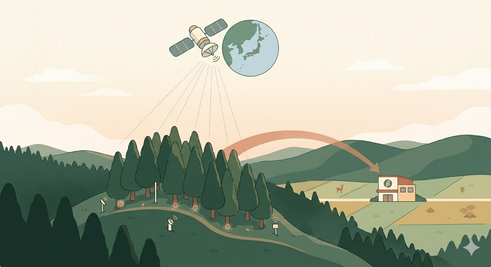
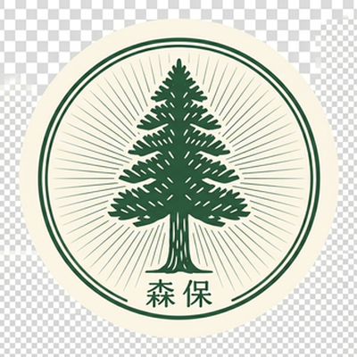

About

欧州 Sentinel-2 と Sentinel-1 が日本上空を週2〜3回観測。本プロト深掘りは、AWS Open Data の Sentinel-2 L2A タイル（無料）から実際に NDVI を計算しています。
「もりみえる」候補リストは、J-クレジット制度に登録された実在の森林経営活動プロジェクト264件（2026年5月時点）から選んで提示します。架空のサンプルではありません。
取得・処理・推定の各ステップに暗号タイムスタンプ。第三者が後から検証可能なモニタリング報告書を生成します。
Step 1
入力いただいた条件で、あなたの会社にあった森の候補をご提案します。
Step 2
クリックで、その森を衛星で「いま」見ることができます。
Step 3 — 深掘り
林野庁令和7年度委託事業の対象地。航空レーザ計測の高精度ベースラインと、Sentinel-2の週次観測で「いま」を捉えています。
過去5年の NDVI 推移（週次観測）
推定 年間 CO₂ 吸収量
1,420 t-CO₂/年
95% 信頼区間：1,180 – 1,690 t-CO₂
クレジット化試算
1,705 万円/年
@ 12,000円/t-CO₂（森林由来J-クレジット直近価格）
森の概要
林野庁データの参照
Step 4
この度のコミットを、暗号タイムスタンプつきで記録しました。
第三者が後から「この時点でこの内容が決定された」ことを検証できます。

FOREST COMMITMENT CERTIFICATE
森林コミットメント証明書
この度、サンプル株式会社様におかれましては、
下記の森林の保全と育成に対し、コミットを表明されました。
| 対象森林 | 富山県 氷見市・朝日山系 |
|---|---|
| 面積 | 182 ha |
| 推定年間CO₂吸収量 | 1,420 t-CO₂ （95% CI: 1,180 – 1,690） |
| コミット期間 | 2026年5月13日 〜 2031年5月12日（5年間） |
| 年間ご予算 | 300 万円 |
改ざん不能な記録
※ 本証明書は意思表明書として発行されるもので、J-クレジット制度の認証クレジットそのものを表すものではありません。クレジット創出までの正式な認証・モニタリング手続は、J-クレジット制度の方法論に準拠して別途進められます。
Technology
Sentinel-2（光学・10m解像度・週2回）、Sentinel-1（SAR・全天候・週1-2回）、Landsat 8/9を統合。日本上空でほぼ毎日、何らかの観測機会があります。
森林生態系多様性基礎調査（4kmグリッド15,000プロット×25年）と航空レーザ計測（民有林80%整備）を組み合わせ、衛星推定モデルの学習データに。
TPM 2.0 attestation（取得時刻の証明）+ Merkle hash chain（処理パイプライン）+ RFC 3161タイムスタンプで、モニタリング報告書を暗号学的に検証可能化。
すべて無料データ + オープンソース。小規模な森林組合・自治体でも運用可能。「精度競争」ではなく「検証可能性 × 普及可能性」で価値を生みます。